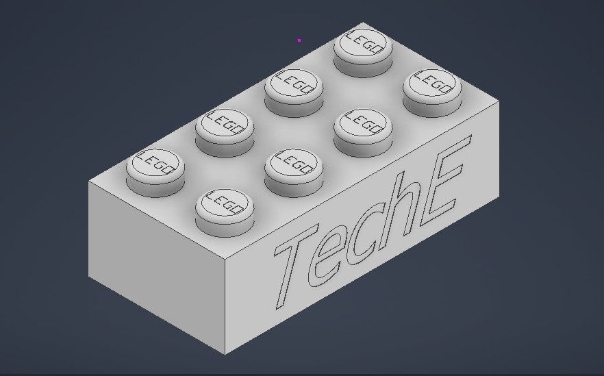
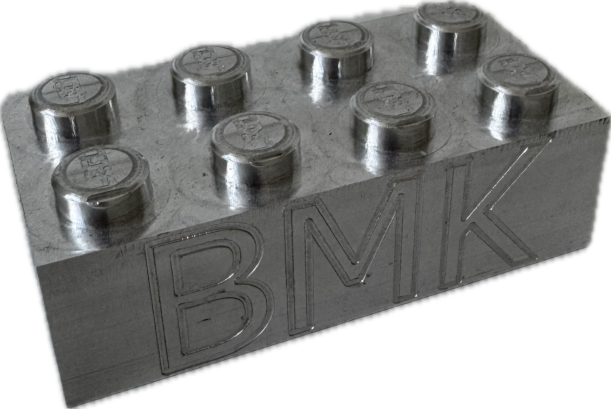
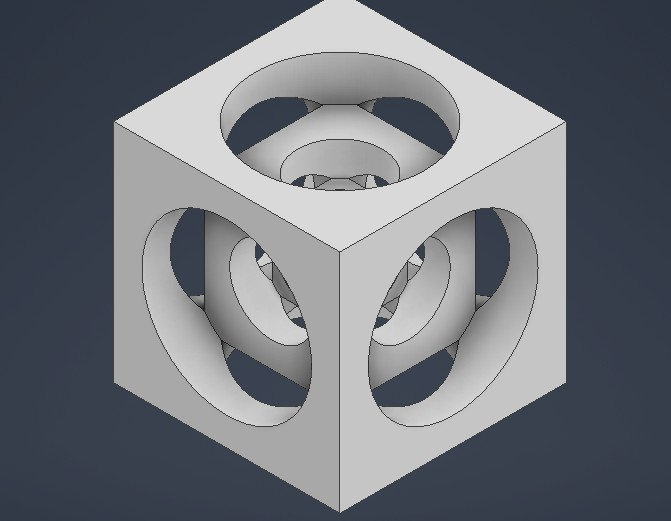
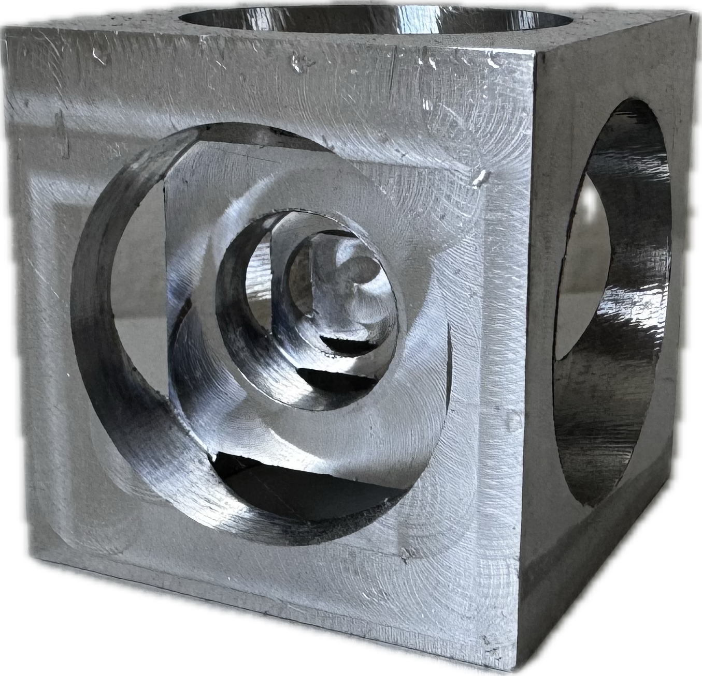
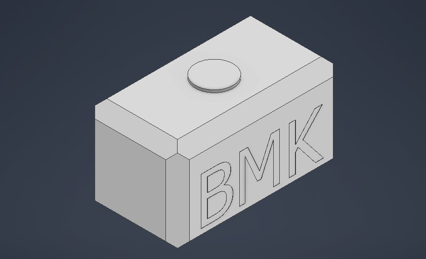
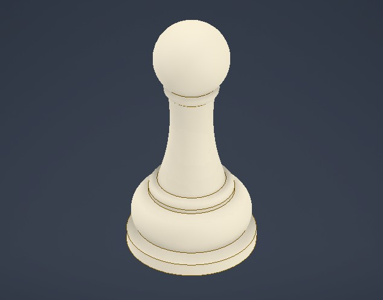
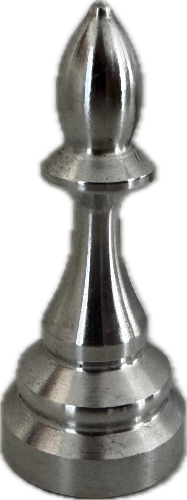
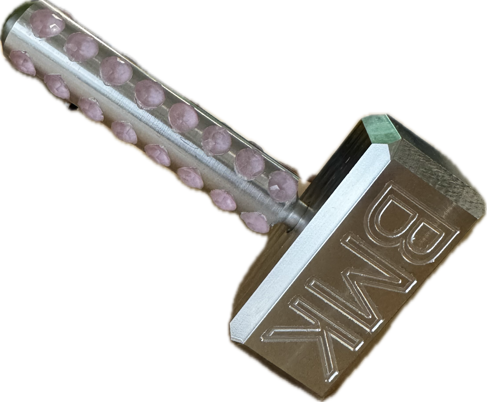
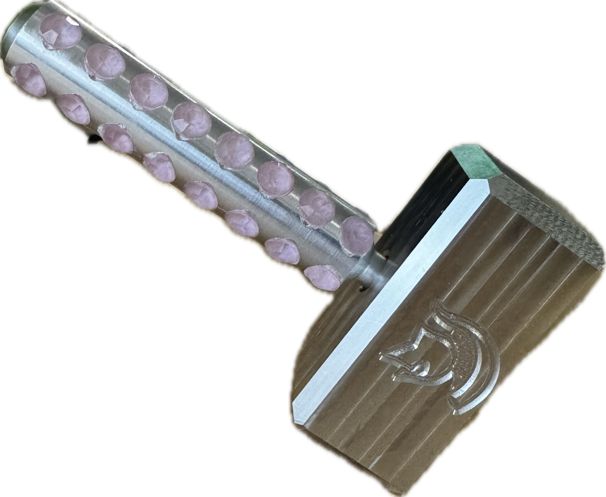

CAD • CAM • CNC Milling • Turning • Precision Manufacturing
This project group includes a Turner’s Cube, aluminum LEGO brick, mini Thor’s Hammer, and custom chess pieces. Through these projects, I developed hands-on experience in CNC milling and turning, setup planning, toolpath execution, precision tolerancing, and dimensional accuracy.


Aluminum LEGO Brick


Turner’s Cube

Mini Thor’s Hammer


Chess Piece
These parts helped strengthen my understanding of CAD/CAM workflows, workholding, multiple setups, machining internal and external features, and producing parts with strong fit, finish, and repeatability.

Machining Process

Final Part
This project involved machining a mini Thor’s Hammer using multiple setups and complex geometry. Focus was placed on precision, alignment, and surface finish throughout the machining process.